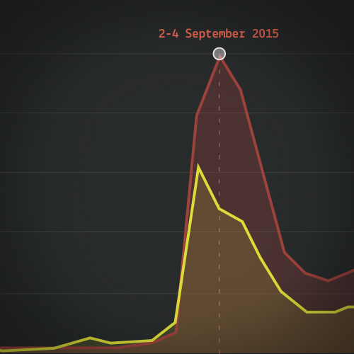
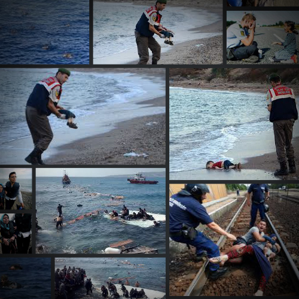
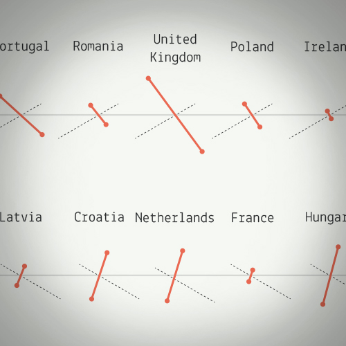
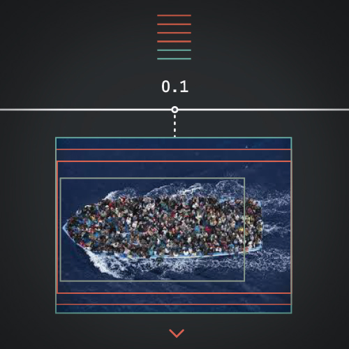
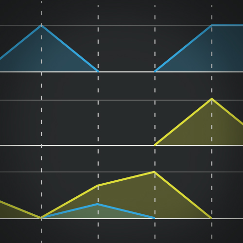

Everyday media organizations flood us with a huge amount of images to report the latest news, trying to provide us with all the things we need to reconstruct the big picture of a given phenomenon. However there are images that move us more than others because of their emotional power and it’s around these images that our perception is often shaped. This is true for the European migration crisis as well. Everyone of us, when talking about this issue, has in his/her mind one or more images that struck him/her and they are often different from one person to the other.
Susan Sontag once said, “to photograph is to frame, and to frame is to exclude”. The images used to report a phenomenon are always the result of an editorial choice and all the different photographs that each of us remembers reflect the multitude of opinions on the issue. It becomes obvious then the great responsibility that the media industry has towards its audience when reporting a phenomenon of such impact. Even when arguing their cases, they should never twist reality to their own agenda.
By Agata Brilli, Giacomo Ciurlo, Michele Invernizzi, Giulia Piccoli Trapletti, Laura Toffetti, Hou Xuanxuan
When a picture is worth more
than 950.317 words
chapters

At the crisis peak
A first exploration to the migration controversy on the web

Shaping public awareness
Images as a reflection of a phenomenon’s perception

The migration on stage
What the images tell us about editorial choices

When an event becomes THE event
Same event, several ways to represent it

Archetypes in the making
Several images, same way to represent them
project by
- Agata Brilli
- Giacomo Ciurlo
- Michele Invernizzi
- Giulia Piccoli Trapletti
- Laura Toffetti
- Hou Xuanxuan
Faculty
- Paolo Ciuccarelli
- Marco Fattore
- Stefano Mandato
- Michele Mauri
- Salvatore Zingale
Teaching Assistants
- Angeles Briones
- Daniele Ciminieri
- Gabriele Colombo
- Azzurra Pini